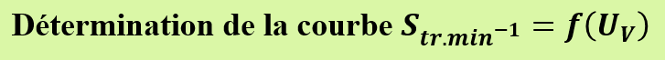
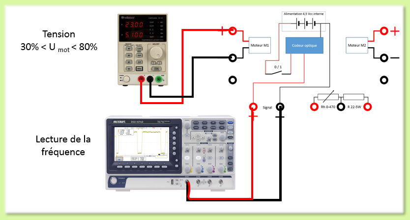
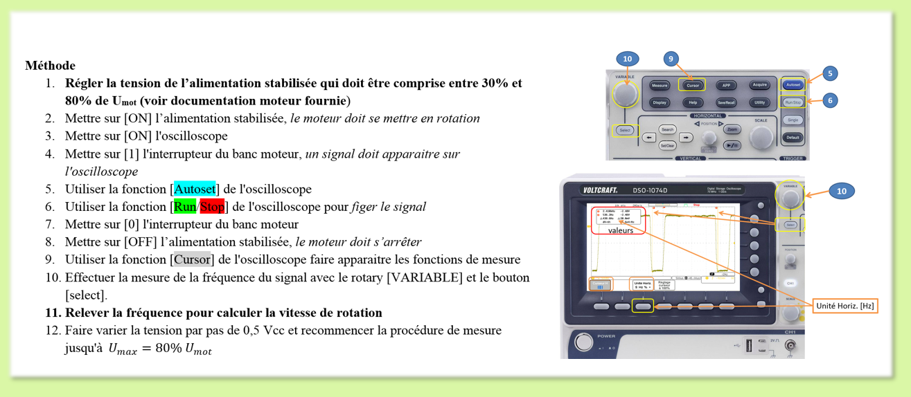
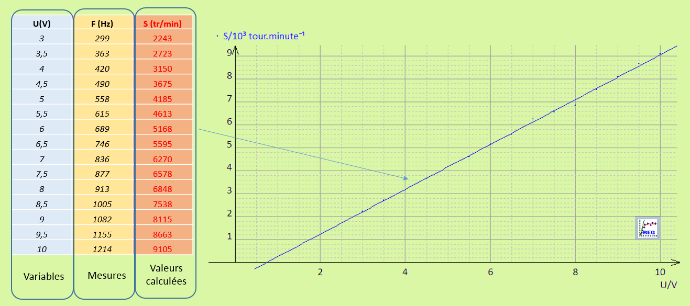
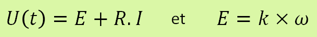

Mettre en évidence la variation de vitesse d'un MCC en faisant évoluer la tension d'alimentation.
Etape 1 :

Etape 2 :
L'utilisation d'un tableur type EXCEL ou une application comme REGRESSI est conseillée. Pour calculer la vitesse de rotation du MCC en tr/min, nous rappelons que le disque codeur comporte huit encoches.

Le nuage de points obtenu fait bien apparaitre une relation entre la vitesse de rotation et la tension d'alimentation lors de la phase de régime constant. L'équation donnée initialement fait apparaitre la grandeur E, la force électromotrice. Une autre relation met en évidence un coefficient k qui lie la fréquence de rotation à la tension d'alimentation U.

Afin de déterminer ce coefficient k il est nécessaire de déterminer la résistance R.
Retour en haut de la page